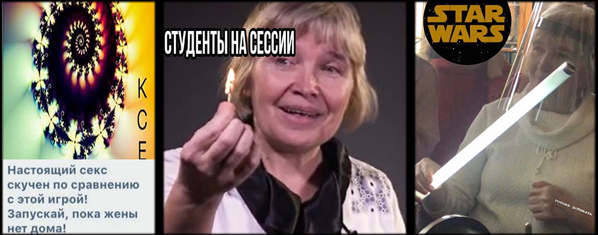

Группа 3733804/10002
"Самая дружная группа на свете🤡"

Группа была сформирована в 2021 году. В зеленых толстовках наши адаптеры - Соня и Лиза. 31 августа, когда была сделана эта фотография, мы знакомились и играли в разные игры, которые подготовили адаптеры: я никогда "не", домики-гномики и другие.

В конце 1 семестра к нам присоединили третью группу - иностранцев. Сначала мы не были им рады, но потом сдружились и большинство оказалось хорошими людьми. Вали стал нашим старостой, Анвар просто быдло, а Артур нормальный пацан. В центре Катя.
Первым душным предметом стало Концепции Современного Естествознания. Бабаева М.А. пообещала всем пулеметы, очень порадовав некоторых на допсе. Ходила в шлеме силовика и не заценила выступление Артура.
Философия - предмет для унижения студентов. Знакомьтесь, это Быльева - репер Оксимирон с дефектом речи. Постоянно ходит в маске, говорит тоже в ней, из-за чего не хрена не понятно, что она говорит. Чтобы получить у нее автомат, нужн о было написать статью абсолютно любую. Так как писали почти все, то отвечала она раз в месяц. Если идешь сдавать ей зачет, то радуешься сдачи больше, чем защите курсовой на 2 курсе.

Во 2-ом семестре по высшей математике нам поставили нового препода-практика по высшей математике. Мистер Князькин работал на тот момент окоголо полугода в политехе. Не мог доходчиво ничего объяснить, постоянно писал решение через равно и непонятными способами, а потом спрашивал:"Всем понятно?", а на наши вопросы отвечал "Чиво-чиво???". Когда Вали сказал, что ему что-то непонятно, Князькин стал кричать и спрашивать кому это не понятно.